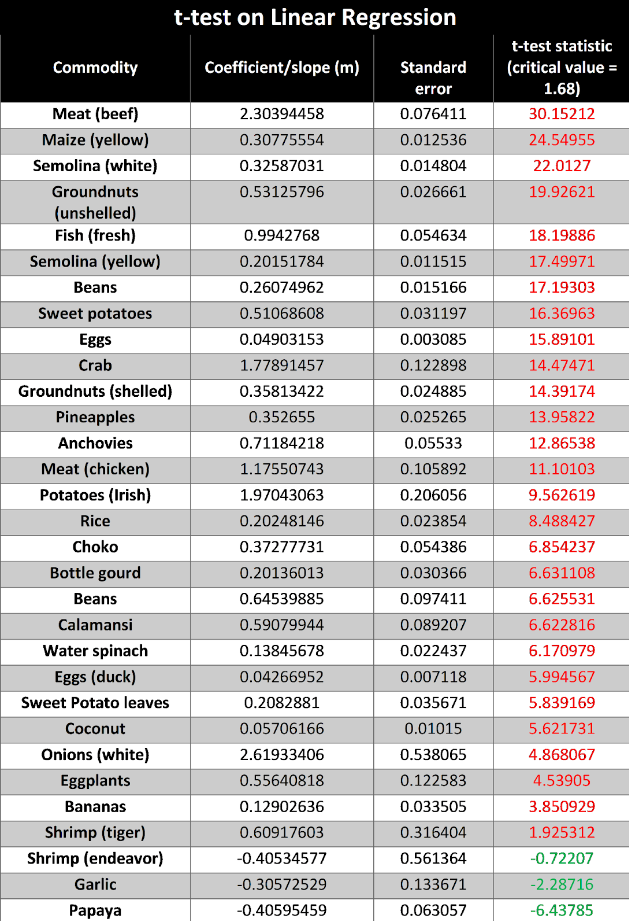
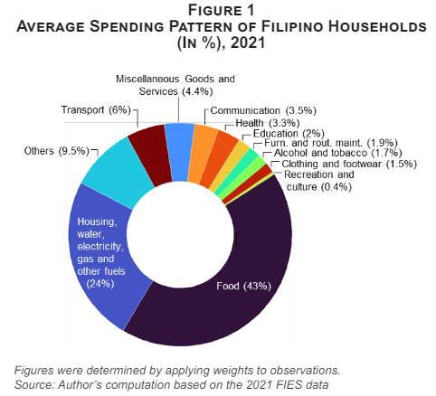
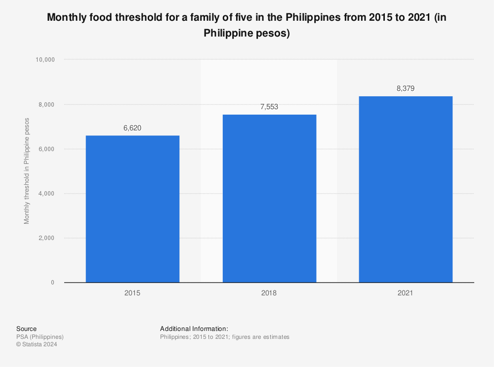
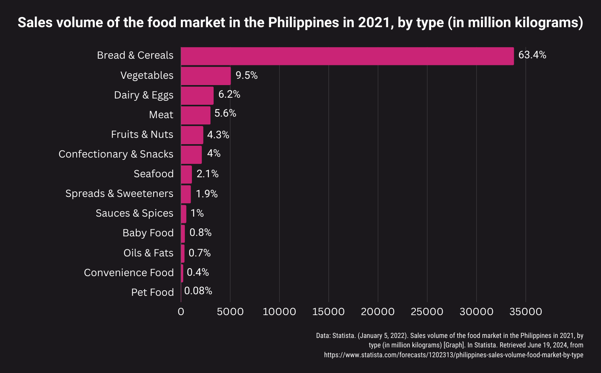

Interpretations and Analysis
Research Question 1: Which common household food items saw the highest rate of change or variation in prices over the years?
From the commodities that are classified as non-stationary from the ADF test, we used linear regression to model the data and used a t-test to determine the magnitude and directions of the trends in price. From the table below, the top 5 commodities with the most significant price increases are: Meat (beef), Maize (yellow), Semolina (white), Groundnuts (unshelled), and Fish (fresh). Meanwhile, commodities such as Shrimp (endeavor), Garlic, and Papaya had downward trends in price. A majority of food items saw significant increases in price, which may contribute to a difficulty in procuring them for the average Filipino.
Research Question 2: Is the average Filipino household able to afford the increased food prices?
According to the Congressional Policy and Budget Research Department in 2022, 43% of expenses go into food, though this varies by region ranging from 37.8% to 60.1% of expenditures being allocated for food.
Additionally, based on the PSA’s 2021 Annual Family Income and Expenditure Survey, displayed in detail per region in the graph, the average annual family expenditure of the whole country is estimated to be ₱228,000.00, or about ₱19,066.00 a month. If 43% of that monthly income goes to food, the average food budget would be about ₱8,198.00. This is close to the average monthly food threshold for a family of 5 in the Philippines (₱8,379.00) according to the PSA in 2021.
There is no definitive list of groceries for every household in the country, but the closest summary of this information was found in a market study performed by Statista, obtaining the sales volume of several food types in the Philippines over the year 2021:
Here, it was found that the food category with the highest volume of sales was Bread and Cereals, which comprises all grain products including rice, and 63.4% of the total sales in the Philippine food market were under this category. In recent years, rice has been valued at about ₱40.00 per kilo. The next categories that followed were Vegetables, Dairy products and eggs, Meats, Fruits and nuts, and so on, with much lower percentages. The wide range of food products under these categories vary greatly in price, with vegetables and fruits for the most part ranging in price from about ₱50.00 to ₱200.00, save for a few spikes to ₱400.00 for onions. Meats differed in pricing for pork (₱200.00~), beef (₱300~), and chicken (₱100~). Seafood ranged from about ₱200 for fish, and reached prices of up to ₱600~ for tiger shrimp.
At present, most Filipino families purchase grain products such as bread and rice the most in terms of volume, which may be doable given the budget and its average price. The same goes for most vegetables and fruit save for specific events with high demand. Meat and seafood products are on the higher end of pricing, however, and most families would not be able to afford products such as crab and shrimp. Overall, common household items may be considered affordable, but not items that are less likely to be purchased regularly.
It is necessary to note that the interpretations are drawn from the country as a whole on average and each region and the places therein, whether rural or urban, may have varying reactions to the pricing. This can be seen with the differences between NCR with the highest average annual income at ₱400,000.00, and BARMM with the lowest average at ₱200,000.00. The location in which products are purchased may also affect the average pricing, such as in in-mall supermarkets versus wet markets.